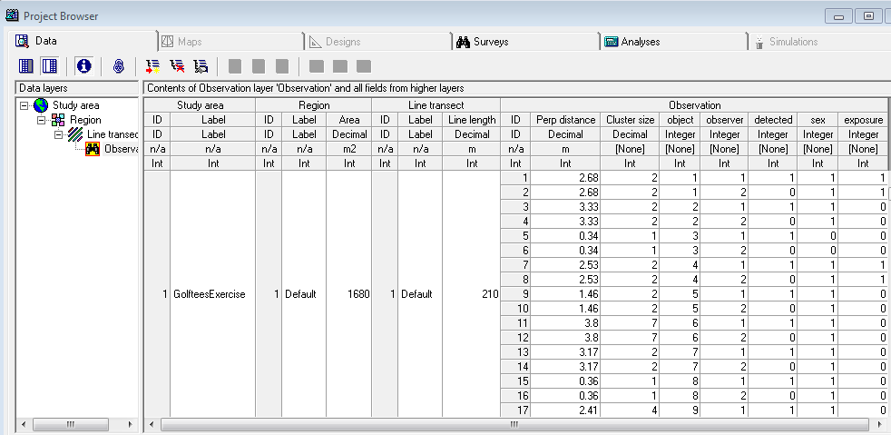
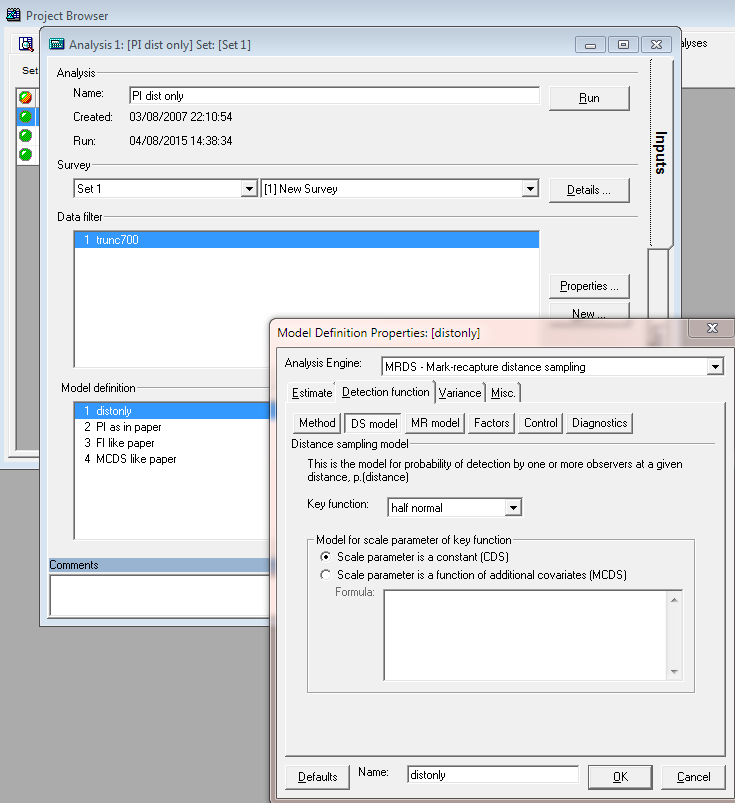

11 Mark-recapture distance sampling of golftees
This document is designed to give you some pointers so that you can perform the Mark-Recapture Distance Sampling practical directly using the mrds package in R, rather than via the Distance graphical interface. I assume you have some knowledge of R, the mrds package, and Distance.
11.1 Golf tee survey
The golf tee dataset is provided as part of the mrds package, as well as in the Distance GolfteesExercise project.
Distance 7 instructions
Data layers associated with the golftees dataset-
Note particularly the fields in the Observation layer: object, observer, detected.

Open R and load the mrds package and golf tee dataset.
library(mrds)
data(book.tee.data)
#investigate the structure of the dataset
str(book.tee.data)List of 4
$ book.tee.dataframe:'data.frame': 324 obs. of 7 variables:
..$ object : num [1:324] 1 1 2 2 3 3 4 4 5 5 ...
..$ observer: Factor w/ 2 levels "1","2": 1 2 1 2 1 2 1 2 1 2 ...
..$ detected: num [1:324] 1 0 1 0 1 0 1 0 1 0 ...
..$ distance: num [1:324] 2.68 2.68 3.33 3.33 0.34 0.34 2.53 2.53 1.46 1.46 ...
..$ size : num [1:324] 2 2 2 2 1 1 2 2 2 2 ...
..$ sex : num [1:324] 1 1 1 1 0 0 1 1 1 1 ...
..$ exposure: num [1:324] 1 1 0 0 0 0 1 1 0 0 ...
$ book.tee.region :'data.frame': 2 obs. of 2 variables:
..$ Region.Label: Factor w/ 2 levels "1","2": 1 2
..$ Area : num [1:2] 1040 640
$ book.tee.samples :'data.frame': 11 obs. of 3 variables:
..$ Sample.Label: num [1:11] 1 2 3 4 5 6 7 8 9 10 ...
..$ Region.Label: Factor w/ 2 levels "1","2": 1 1 1 1 1 1 2 2 2 2 ...
..$ Effort : num [1:11] 10 30 30 27 21 12 23 23 15 12 ...
$ book.tee.obs :'data.frame': 162 obs. of 3 variables:
..$ object : int [1:162] 1 2 3 21 22 23 24 59 60 61 ...
..$ Region.Label: int [1:162] 1 1 1 1 1 1 1 1 1 1 ...
..$ Sample.Label: int [1:162] 1 1 1 1 1 1 1 1 1 1 ...#extract the list elements from the dataset into easy-to-use objects
detections <- book.tee.data$book.tee.dataframe
#make sure sex and exposure are factor variables
detections$sex <- as.factor(detections$sex)
detections$exposure <- as.factor(detections$exposure)
region <- book.tee.data$book.tee.region
samples <- book.tee.data$book.tee.samples
obs <- book.tee.data$book.tee.obsWe’ll start by fitting the initial full independence model, with only distance as a covariate - just as was done in the “FI - MR dist” model in Distance. Indeed, if you did fit that model in Distance, you can look in the Log tab at the R code Distance generated, and compare it with the code we use here.
Feel free to use ? to find out more about any of the functions used – e.g., ?ddf will tell you more about the ddf function.
#Fit the model
fi.mr.dist <- ddf(method='trial.fi',mrmodel=~glm(link='logit',formula=~distance),
data=detections,meta.data=list(width=4))
#Create a set of tables summarizing the double observer data (this is what Distance does)
detection.tables <- det.tables(fi.mr.dist)
#Print these detection tables
detection.tables
Observer 1 detections
Detected
Missed Detected
[0,0.4] 1 25
(0.4,0.8] 2 16
(0.8,1.2] 2 16
(1.2,1.6] 6 22
(1.6,2] 5 9
(2,2.4] 2 10
(2.4,2.8] 6 12
(2.8,3.2] 6 9
(3.2,3.6] 2 3
(3.6,4] 6 2
Observer 2 detections
Detected
Missed Detected
[0,0.4] 4 22
(0.4,0.8] 1 17
(0.8,1.2] 0 18
(1.2,1.6] 2 26
(1.6,2] 1 13
(2,2.4] 2 10
(2.4,2.8] 3 15
(2.8,3.2] 4 11
(3.2,3.6] 2 3
(3.6,4] 1 7
Duplicate detections
[0,0.4] (0.4,0.8] (0.8,1.2] (1.2,1.6] (1.6,2] (2,2.4] (2.4,2.8]
21 15 16 20 8 8 9
(2.8,3.2] (3.2,3.6] (3.6,4]
5 1 1
Observer 1 detections of those seen by Observer 2
Missed Detected Prop. detected
[0,0.4] 1 21 0.9545455
(0.4,0.8] 2 15 0.8823529
(0.8,1.2] 2 16 0.8888889
(1.2,1.6] 6 20 0.7692308
(1.6,2] 5 8 0.6153846
(2,2.4] 2 8 0.8000000
(2.4,2.8] 6 9 0.6000000
(2.8,3.2] 6 5 0.4545455
(3.2,3.6] 2 1 0.3333333
(3.6,4] 6 1 0.1428571# They could also be plotted, but I've not done so in the interest of space
# plot(detection.tables)
#Produce a summary of the fitted detection function object
summary(fi.mr.dist)
Summary for trial.fi object
Number of observations : 162
Number seen by primary : 124
Number seen by secondary (trials) : 142
Number seen by both (detected trials): 104
AIC : 452.8094
Conditional detection function parameters:
estimate se
(Intercept) 2.900233 0.4876238
distance -1.058677 0.2235722
Estimate SE CV
Average p 0.6423252 0.04069409 0.06335434
Average primary p(0) 0.9478579 0.06109655 0.06445750
N in covered region 193.0486185 15.84826458 0.08209468#Produce goodness of fit statistics and a qq plot
gof.result <- ddf.gof(fi.mr.dist,
main="Full independence, trial mode goodness of fit\nGolftee data")Figure 11.1: Goodness of fit (FI-trial) to golftee data.
chi.distance <- gof.result$chisquare$chi1$chisq
chi.markrecap <- gof.result$chisquare$chi2$chisq
chi.total <- gof.result$chisquare$pooled.chiDistance 7 instructions
Specification of the full independence model with distance as the only covariate in the mark-recapture model, fitted with a logit transform 
Having run this model in Distance 7, convince yourself the parameter estimates for sigma and the distance covariate are the same when using the Distance 7 interface as when using mrds() directly.
Abbreviated \(\chi^2\) goodness of fit assessment shows the \(\chi^2\) contribution from the distance sampling model to be 11.5 and the \(\chi^2\) contribution from the mark-recapture model to be 3.4. The combination of these elements produces a total \(\chi^2\) of 14.9 with 17 degrees of freedom, resulting in a P-value of 0.604
#Calculate density estimates using the dht function
tee.abund <- dht(fi.mr.dist,region,samples,obs)
kable(tee.abund$individuals$summary, digits=2,
caption="Survey summary statistics for golftees")| Region | Area | CoveredArea | Effort | n | ER | se.ER | cv.ER | mean.size | se.mean |
|---|---|---|---|---|---|---|---|---|---|
| 1 | 1040 | 1040 | 130 | 229 | 1.76 | 0.12 | 0.07 | 3.18 | 0.21 |
| 2 | 640 | 640 | 80 | 152 | 1.90 | 0.33 | 0.18 | 2.92 | 0.23 |
| Total | 1680 | 1680 | 210 | 381 | 1.81 | 0.14 | 0.08 | 3.07 | 0.15 |
kable(tee.abund$individuals$N, digits=2,
caption="Abundance estimates for golftee population with two strata")| Label | Estimate | se | cv | lcl | ucl | df |
|---|---|---|---|---|---|---|
| 1 | 356.52 | 32.35 | 0.09 | 294.54 | 431.53 | 17.13 |
| 2 | 236.64 | 44.14 | 0.19 | 147.33 | 380.09 | 5.06 |
| Total | 593.16 | 60.38 | 0.10 | 478.32 | 735.57 | 16.06 |
Now, see if you can work out how to change the call to ddf to fit the other models mentioned in the exercise, and then write code to enable you to compare the models and select among them.
11.2 Crabeater seal survey
This analysis is described in Borchers et al. (2005) Biometrics paper of aerial survey data looking for seals in the Antarctic pack ice. There were four observers in the plane, two on each side (front and back).
The data from the survey has been saved in a .csv file. This file is read into R using read.table(). Note that these tables are only needed when estimating abundance by scaling up from the covered region to the study area.
library(Distance)
crabseal <- read.csv("crabbieMRDS.csv")
# Half normal detection function, 700m truncation distance,
# logit function for mark-recapture component
crab.ddf.io <- ddf(method="io", dsmodel=~cds(key="hn"),
mrmodel=~glm(link="logit", formula=~distance),
data=crabseal, meta.data=list(width=700))
summary(crab.ddf.io)
Summary for io.fi object
Number of observations : 1740
Number seen by primary : 1394
Number seen by secondary : 1471
Number seen by both : 1125
AIC : 3011.463
Conditional detection function parameters:
estimate se
(Intercept) 2.107762345 0.0994391200
distance -0.003087713 0.0003159216
Estimate SE CV
Average primary p(0) 0.8916554 0.009606428 0.010773701
Average secondary p(0) 0.8916554 0.009606428 0.010773701
Average combined p(0) 0.9882614 0.002081614 0.002106339
Summary for ds object
Number of observations : 1740
Distance range : 0 - 700
AIC : 22314.4
Detection function:
Half-normal key function
Detection function parameters
Scale coefficient(s):
estimate se
(Intercept) 5.828703 0.0268578
Estimate SE CV
Average p 0.5845871 0.01247837 0.02134562
Summary for io object
Total AIC value : 25325.86
Estimate SE CV
Average p 0.5777249 0.01239179 0.02144929
N in covered region 3011.8139211 79.84197966 0.02650960Distance 7 instructions
Specification of the point independence model with distance as the only covariate in the mark-recapture model. However under point independence, not only is the a mark-recapture model but also a distance sampling model (shown here) 
Having run this model in Distance 7, convince yourself the parameter estimates for sigma and the distance covariate are the same when using the Distance 7 interface as when using mrds() directly.
Goodness of fit could be examined in the same manner as the golf tees by the use of ddf.gof(crab.ddf.io) but I have not shown this step.
Following model criticism and selection, estimation of abundance ensues. The estimates of abundance for the study area are arbitrary because inference of the study was restricted to the covered region. Hence the estimates of abundance here are artificial. For illustration, the checkdata() function produces the region, sample, and observation tables. From these tables Horvitz-Thompson like estimators can be applied to produce estimates of \(\hat{N}\). The use of convert.units adjusts the units of perpendicular distance measurement (m) to units of transect effort (km). Be sure to perform the conversion correctly or your abundance estimates will be off by orders of magnitude.
tables <- Distance:::checkdata(crabseal[crabseal$observer==1,])
crab.ddf.io.abund <- dht(region=tables$region.table,
sample=tables$sample.table, obs=tables$obs.table,
model=crab.ddf.io, se=TRUE, options=list(convert.units=0.001))
kable(crab.ddf.io.abund$individuals$summary, digits=3,
caption="Summary information from crabeater seal aerial survey.")| Region | Area | CoveredArea | Effort | n | ER | se.ER | cv.ER | mean.size | se.mean |
|---|---|---|---|---|---|---|---|---|---|
| 1 | 1e+06 | 8594.082 | 6138.63 | 2053 | 0.334 | 0.033 | 0.097 | 1.18 | 0.013 |
kable(crab.ddf.io.abund$individual$N, digits=3,
caption="Crabeater seal abundance estimates for study area of arbitrary size.")| Label | Estimate | se | cv | lcl | ucl | df |
|---|---|---|---|---|---|---|
| Total | 413493.2 | 41201.49 | 0.09964248 | 339670.9 | 503359.6 | 128.6257 |
Distance 7 instructions
Specification of the point independence model with distance as the only covariate in the mark-recapture model. However under point independence, not only is the a mark-recapture model but also a distance sampling model (shown here).
The abundance estimates are not an exact match between the Distance 7 analysis and the mrds() analysis because of slight differences in the datasets. However, there is general agreement that the seal population size in this arbitrary study area is approximately 400,000 with a CV of ~10%.
References
Borchers, D. L., J. L. Laake, C. Southwell, and C. G. M. Paxton. 2005. “Accommodating Unmodeled Heterogeneity in Double-Observer Distance Sampling Surveys.” Biometrics 62 (2). Wiley-Blackwell: 372–78. doi:10.1111/j.1541-0420.2005.00493.x.